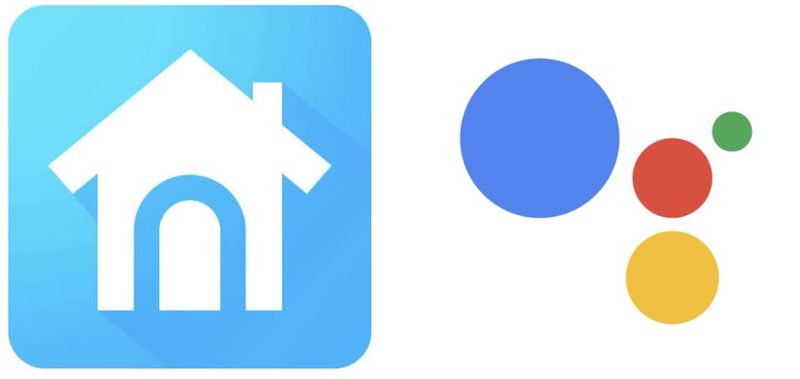
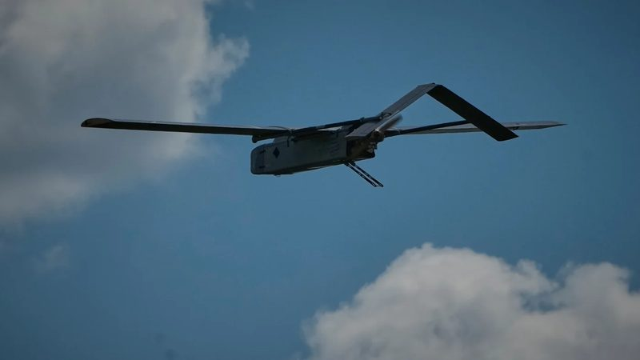
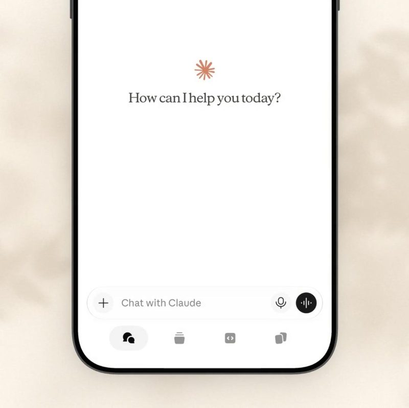
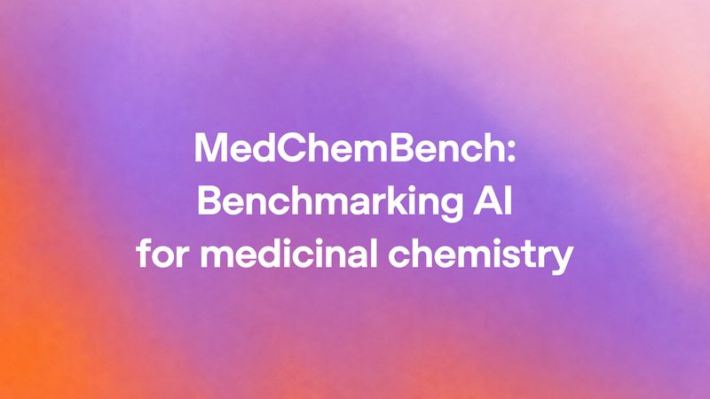

今日頭條
Google 音箱助理 2027 年改由 Gemini 接手 PLUS：黎曼猜想再冒出全人類證明，兩案都待查核
本期重點：Google 宣布 2027 年 8 月 2 日起，音箱與智慧螢幕上的 Google Assistant 全面由 Gemini for Home 取代，Nest App 也將在 2027 年 1 月 25 日停用；黎曼猜想在 AI 證明之後數小時，又出現一份宣稱完全由人類完成的證明。另有聯合國殺手機器人談判只同意再談兩年、Reuters 指美國 SEC 調查聚焦 Nvidia 會計、Thinking Machines 推出可在筆電離線跑的開源模型、Gemini App 可做 GIF、Claude 手機 App 改版，以及 OpenAI 推出藥物化學測驗 MedChemBench。週末新聞較少，部分題材為前期事件的後續進展。
📋 2026/11/22（日） 共 8 則 Google 音箱助理 2027 年 8 月退場，改由 Gemini 接手 後續：黎曼猜想再冒出全人類證明，兩案都待查核 聯合國殺手機器人談判破局，只同意再談兩年 後續：Reuters 指美國 SEC 調查聚焦 Nvidia 會計 Thinking Machines 推出筆電能離線跑的開源模型 Gemini App 可以自己做 GIF 動圖 Claude 手機 App 改版，底部加四個分頁 OpenAI 推出藥物化學測驗，AI 挑化合物仍不及格 
圖：Google 新聞 #1 Google 音箱助理 2027 年 8 月退場，改由 Gemini 接手 Google Home 與 Nest 團隊 11 月 20 日公告，2027 年 8 月 2 日起，音箱與智慧螢幕上的 Google Assistant 將由 Gemini for Home 語音助理全面取代，升級免費。Nest App（Android、iOS 與網頁版）則在 2027 年 1 月 25 日停用，Nest 裝置與錄影紀錄會自動移到 Google Home App。
💡 跟你有什麼關係： 家裡用 Google 音箱查天氣、開燈的人，之後講話方式可以更口語，不必背固定指令；用 Nest 攝影機的人要記得先把自己存的影片片段下載備份。
⚠️ 官方表示現有支援的裝置都會繼續可用；但 Gemini for Home 各國開放時程不同，Google 表示會在未來幾個月擴大地區，尚未開放的地區要等通知。在 home.nest.com 手動存的影片片段不會跟著搬移。
📰 原始來源：Google Home 與 Nest 官方社群公告（2026-11-20） ↗ 圖：Scientific American／Shutterstock 研究 #2 後續：黎曼猜想再冒出全人類證明，兩案都待查核 Anthropic 數學家 Levent Alpöge 11 月 20 日宣布與 Claude 合作證明黎曼猜想後數小時，美國數學學會會長、史丹佛大學教授 Ravi Vakil 發文表示，史丹佛年輕數學家 Alessandro Masullo 已寫出一份完全由人類完成、宣稱證明廣義黎曼猜想的稿件。審閱這份稿件數個月的史丹佛數學家 Brian Conrad 向 Scientific American 證實內容屬實，但表示稿件「正在大幅修改」。
💡 跟你有什麼關係： 同一個 160 多年的數學難題在同一天出現 AI 與人類兩份宣稱證明，代表 AI 正在改變頂尖研究的競爭方式；但「宣稱」和「被確認」是兩回事，看到相關新聞時要注意查核進度。
⚠️ 這是前期（11/21）黎曼猜想報導的新進展。Masullo 的稿件尚未經任何人驗證，已有數學家表示懷疑；Alpöge 的 Lean 證明最終檢查也仍在進行。Scientific American 註明為發展中新聞。
📰 原始來源：Scientific American（2026-11-20） ↗ 
圖：NPR／AP 政策 #3 聯合國殺手機器人談判破局，只同意再談兩年 聯合國在日內瓦開了一週的會議，原本要為可自行決定攻擊目標的自主武器（俗稱殺手機器人）訂規則，最後在 11 月 21 日凌晨 4 點半達成妥協：各國有兩年時間提出規範，可能具法律約束力，也可能只是自願遵守。紅十字國際委員會、聯合國秘書長與教宗良十四世原本呼籲一年內訂出有約束力的規則。
💡 跟你有什麼關係： 無人機已在烏克蘭、蘇丹與加薩造成大量平民傷亡，聯合國統計蘇丹 2026 年平民死亡有 80% 由無人機造成；規則越晚訂，AI 自行決定攻擊的武器就越可能先普及。
⚠️ NPR 報導指出，美國、俄羅斯與以色列不願接受有約束力的規則；俄羅斯第一天就對議程提出異議，美國則提議用五年時間討論非約束性的自願指引。
📰 原始來源：NPR（2026-11-21） ↗ 圖：Reuters／Manuel Orbegozo 資金 #4 後續：Reuters 指美國 SEC 調查聚焦 Nvidia 會計 Reuters 11 月 20 日引述兩名知情人士報導，美國證券交易委員會（SEC）執法人員正在檢視 Nvidia 可能的會計問題。The Verge 整理，Nvidia 股價週五跌至 125.53 美元，單週下跌 14%，已連續七週下跌，這段期間累計跌幅約 46%。
💡 跟你有什麼關係： Nvidia 是 AI 晶片龍頭，也是許多 ETF 與台股供應鏈的關鍵；它的調查與股價波動，可能影響手上持有科技類基金或 ETF 的投資人。
⚠️ 《華爾街日報》11 月 17 日已報導 SEC 調查 Nvidia，本則新進展是 Reuters 首度指出調查焦點為會計；Reuters 未說明具體涉及哪些項目，也未說明調查何時開始。消息來自匿名知情人士。
📰 原始來源：Reuters（2026-11-20） ↗ 圖：Thinking Machines Lab 工具 #5 Thinking Machines 推出筆電能離線跑的開源模型 前 OpenAI 技術長 Mira Murati 創辦的 Thinking Machines Lab 於 11 月 20 日發布 Inkling 2 Mini，以 Apache 2.0 授權開放權重，總參數 264 億、每次啟用 34 億，檔案約 20GB，32GB 記憶體以上的 Mac 就能在本機執行。官方表示研究員在飛機上離線用 MacBook Pro 跑這個模型，幾分鐘做出一個可玩的飛行模擬器。
💡 跟你有什麼關係： 能在自己電腦離線跑的 AI，資料不必上傳到雲端，適合處理不想外流的文件；開源授權也讓小公司可以免費拿來改裝。
⚠️ 評測分數（如 DeepSWE v1.1 得 48.2%）為官方自評，且各模型測試設定不同；官方也說明這種「迴圈」設計讓部分推理不會寫出來，外部較難監看，這是發布給研究者研究的原因之一。
📰 原始來源：Thinking Machines Lab（2026-11-20） ↗ 圖：9to5Google 新上線 #6 Gemini App 可以自己做 GIF 動圖 Google 11 月 20 日在官方帳號宣布，Gemini App 可以用影片模型 Gemini Omni 1.2 Flash 生成約 3 秒的循環 GIF，在格式選單選 GIF，或直接輸入「Create a GIF」即可。首波在美國、加拿大、英國、日本、韓國、澳洲、德國與法國逐步開放。
💡 跟你有什麼關係： 聊天時想找一張剛好的梗圖，以後可以直接叫 AI 用照片或一句話做出來，不用到處搜尋。
⚠️ 首波開放國家不含台灣；報導未提到其他地區時程。本則依 9to5Google 引述 Gemini 官方帳號貼文整理，二手來源。
📰 原始來源：9to5Google（2026-11-21），引 Gemini 官方 X 帳號（2026-11-20） ↗ 
圖：Anthropic／Daniel Destefanis（經 The Verge） 新上線 #7 Claude 手機 App 改版，底部加四個分頁 Anthropic 設計師 Daniel Destefanis 11 月 20 日在 X 表示，Claude 手機 App 新設計開始推出，底部新增 Chat、Projects、Code、Artifacts 四個分頁。The Verge 指出，OpenAI 前一天才公布 ChatGPT 手機 App 也在測試底部分頁的新設計。
💡 跟你有什麼關係： 常用 Claude 寫程式或整理專案的人，在手機上切換功能會更快；兩大 AI App 同時改版，也代表 AI 助理正從單純聊天變成多功能工具。
⚠️ 新設計為逐步推出，不是所有人都會立刻看到；本則依 The Verge 引述 Anthropic 員工 X 貼文，Anthropic 官方部落格未另發公告。
📰 原始來源：The Verge（2026-11-20），引 Anthropic 設計師 X 貼文 ↗ 
圖：OpenAI 研究 #8 OpenAI 推出藥物化學測驗，AI 挑化合物仍不及格 OpenAI 11 月 20 日發布 MedChemBench，從 117 篇論文與專利整理出 99 道藥物化學題、761 個分子結構，測試 AI 能否看懂分子、解釋實驗結果並挑選下一步要測的化合物。GPT-6.2 Astra 在最高推理設定下拿到 84.5% 的分數，但在挑選化合物與預測數值性質上只拿到約一半分數。
💡 跟你有什麼關係： 新藥研發又慢又貴，AI 若能幫化學家判斷哪些分子值得做實驗，未來可能縮短新藥上市時間；但這份測驗也顯示 AI 最關鍵的判斷能力還不夠可靠。
⚠️ OpenAI 自己表示，結果不能證明模型能發現新藥或改善實驗室決策；模型可能看過題目來源的論文，且每題只作答一次、不用工具也沒有新實驗。屬官方自評。
📰 原始來源：OpenAI（2026-11-20） ↗ ✅ 2026/11/22（日） 可以做： 家裡如果有 Google 或 Nest 音箱、Nest 攝影機，可以先打開 Google Home App 看是否已出現「Set up Gemini for Home」提示；在 home.nest.com 自己存的影片片段不會自動搬家，建議在 2027 年 1 月 25 日前用「Download All」下載備份。
🗂️ 過去 14 天